Taki, Mie: things to do, food and stays
Taki · Mie
Taki
Highlighted on the Mie map.
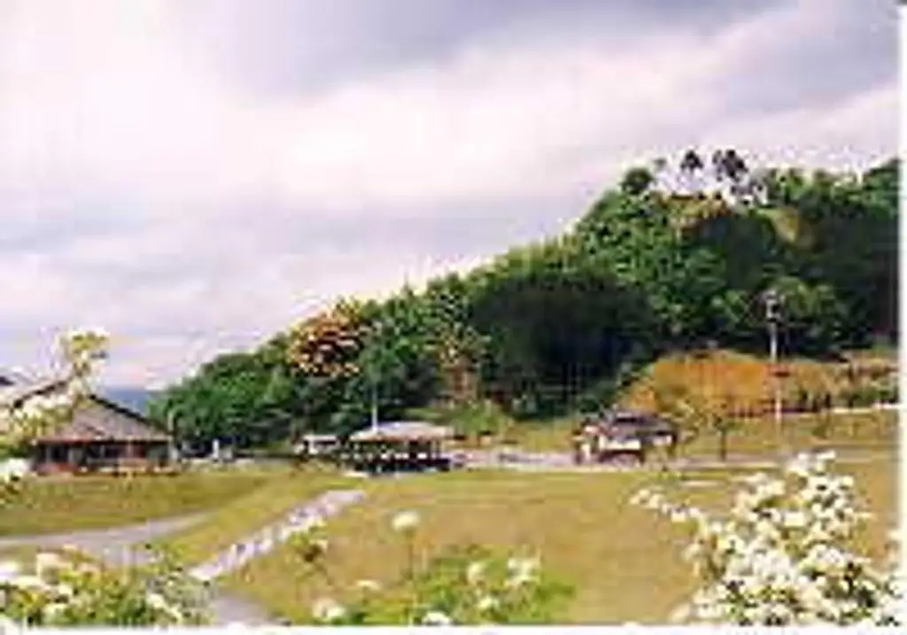
Stay
ホテルヴィソン
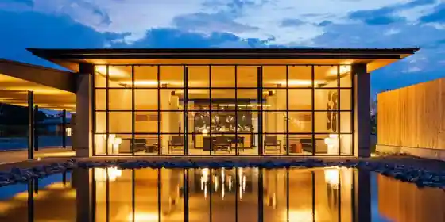
Hotel Vison
HACIENDA VISON HOTEL（ハシェンダ ヴィソン ホテル）
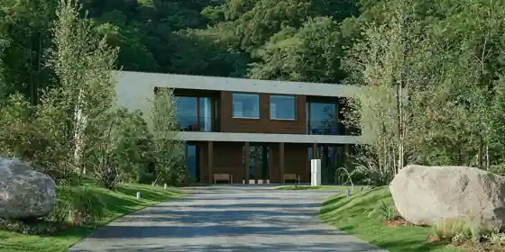
HACIENDA VISON HOTEL(Hashienda Vison Hotel)
ホテルエコノ多気

Hotel Ekono Taki
Hotel in Oka, Taki with breakfast available and parking.
ごかつら池ふるさと村
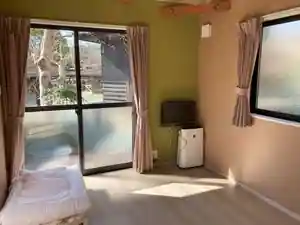
Gokatsura Ike Furusato Mura
Inn in Gokatsura, Taki with room-only plans.
旅籠 ヴィソン
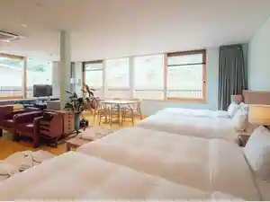
Hatago Vison
Dining
伊勢宮川の里 鄙茅
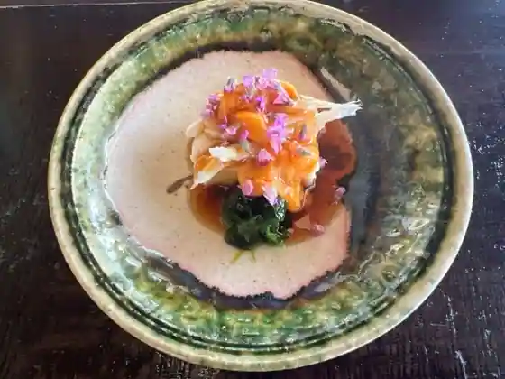
Ise Miyagawa No Sato Hi Me
IZURUN
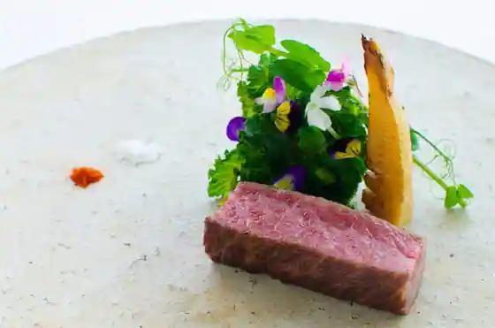
IZURUN
コンフィチュール アッシュ ヴィソン店
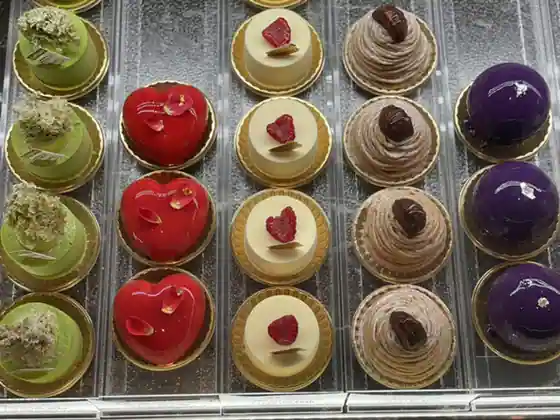
Konfichuru Asshu Vison
Mariage de Farine ヴィソン店
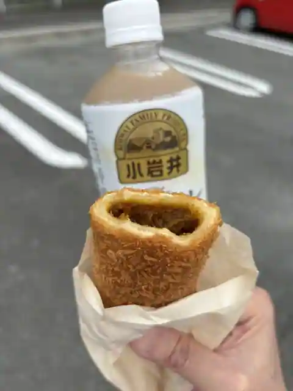
Mariage de Farine Vison
菓子舗 井村屋
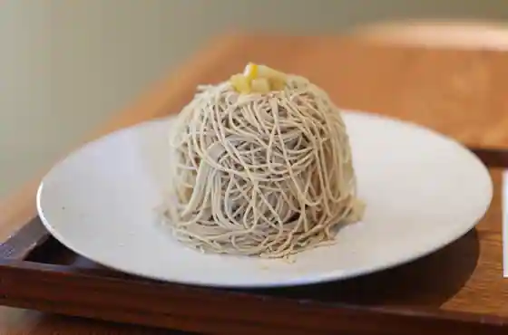
Kashi Ho Imuraya
長新
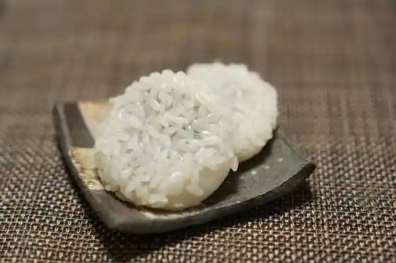
Cho Shin
Egun on
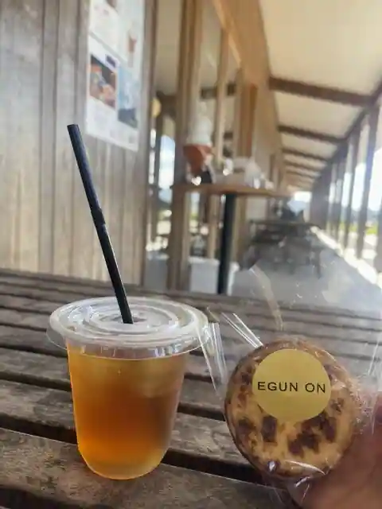
Egun on
削節本舗 伊勢和
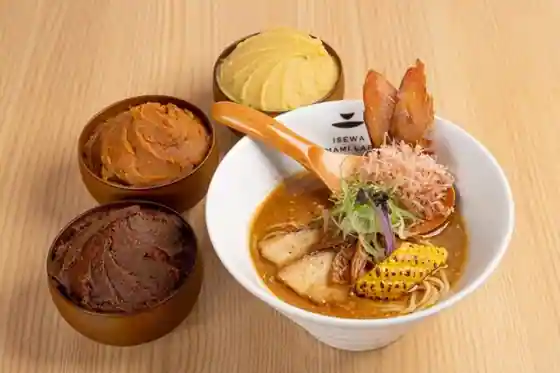
Saku Fushi Honpo Ise Wa
無添加商店 尾粂 三重VISON店
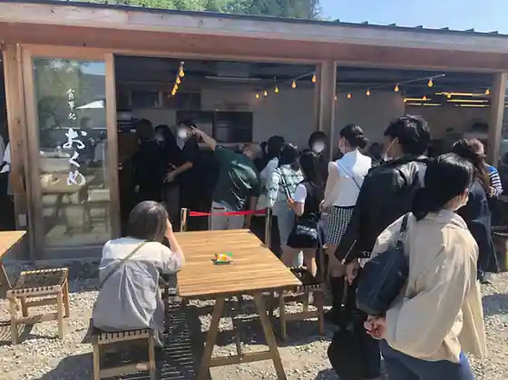
Mutenka Sho O Kume Mie VISON
笠庵 賛否両論 ヴィソン店
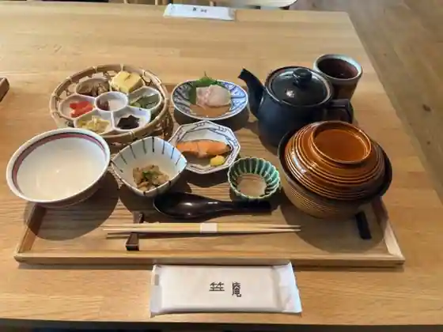
Kasa Iori Sanpiryoron Vison
nouniyell
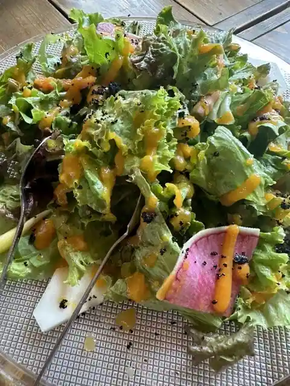
nouniyell
コケコッコー共和国 山の駅よって亭
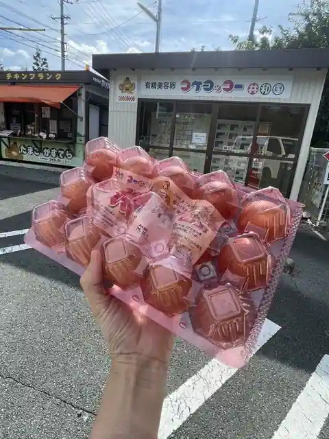
Kokekokko Kyowakoku Yama No Eki Yotte Tei
マーケテリア
Maketeria
伊勢 翁
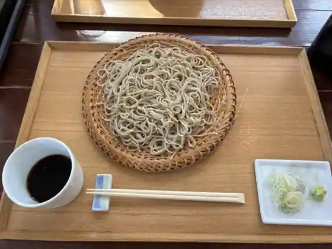
Ise Okina
スギモト
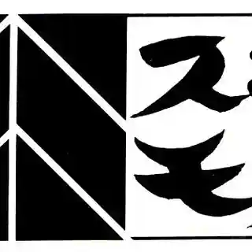
Sugimoto
海女小屋 なか川
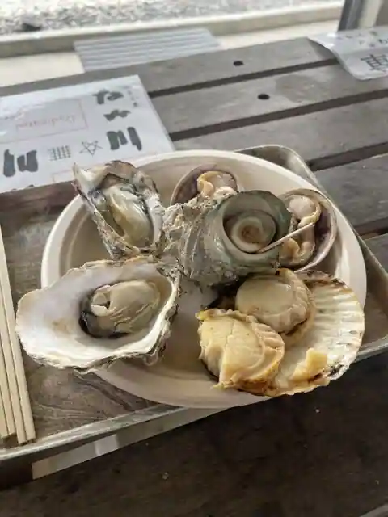
Ama Koya Naka Kawa
cafe Tomiyama ヴィソン店
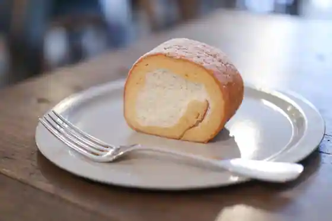
cafe Tomiyama Vison
NOA COFFEE
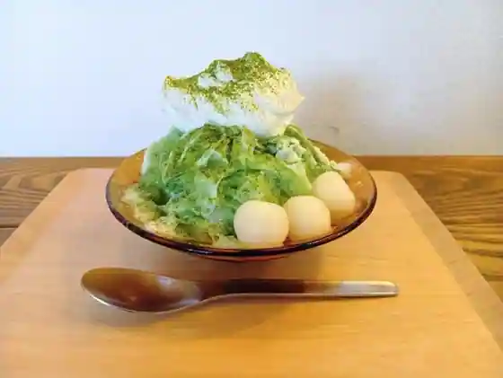
NOA COFFEE
糀茶寮
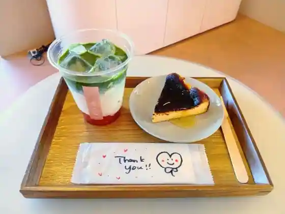
Koji Charyo
柑里
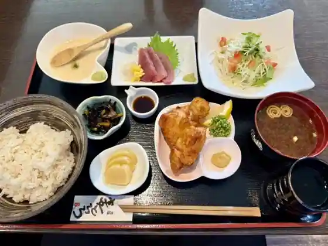
Kan Sato
Casa Urola
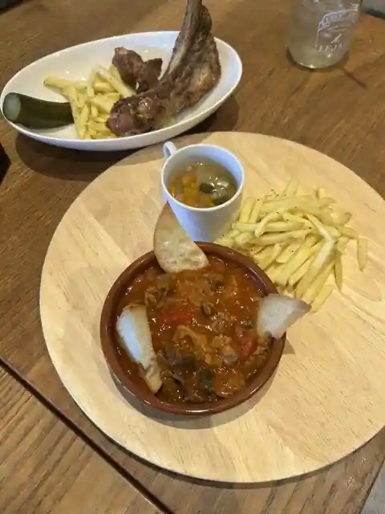
Casa Urola
ARATZ
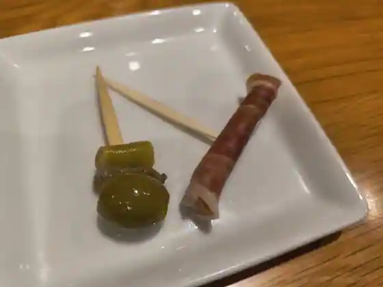
ARATZ
麺や 勁草
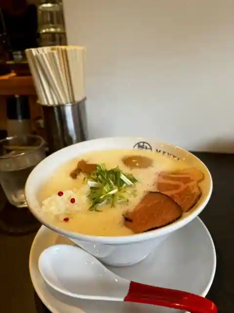
Men Ya Keiso
The dining YOSA八右衛門
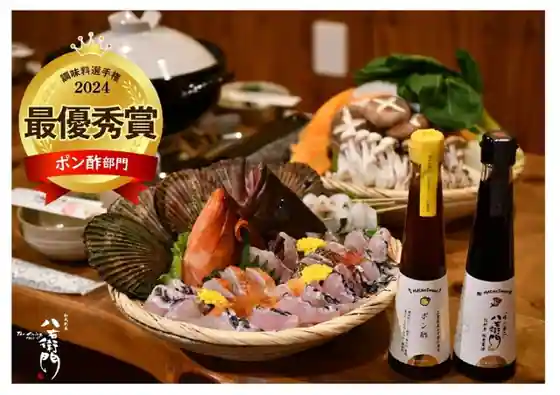
The dining YOSA Hachiemon
Sights
NOUNIYELL (VISON)
Gallery Han Shiro uhaku (VISON)
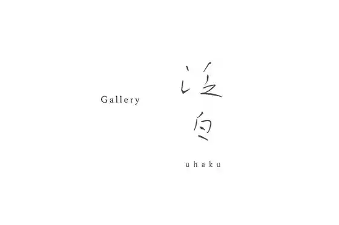
KATACHI museum / salon (VISON)
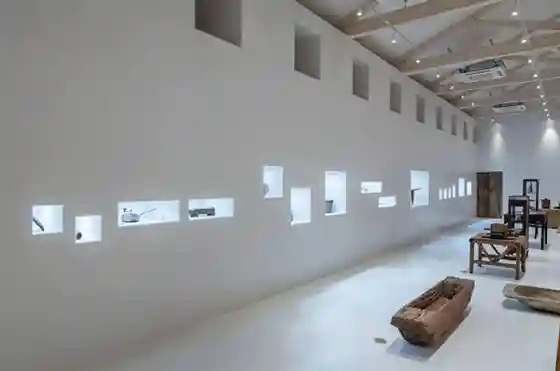
minä perhonen museum / minä perhonen museum shop (VISON)
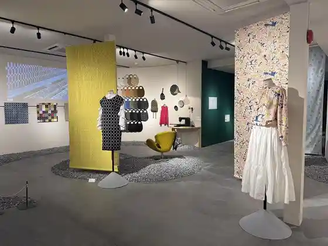
ani TERRACE (VISON)
VISON Sauna (VISON)
BUGGYPARK VISON
Go Katsura Ike Furu Tsu Village Buruberii Kari
Taishi Village (Kaika Joho Mo Keisai)
Gokatsura Ike Furusato Mura
Yahashira Shrine
Nakayama Yakuso Yakuju Park Genjo no Kan
Genjo no Ashiyu
Gokatsura Ike Dobutsu Park
kiond Ennichi
Ki to Mori no Experience Shisetsu kiond
Fureai no Kan
Seiwa no Mori Mauntembaikukosu
Tenkei Park Fuwafuwa Yama Domu
Cazacle Saikuringusuteshon
Taki Go Katsura Ike Furusato Mura Campground
Tanjo Sanshin Miyadera (Tanjo Taishi)
Tanjo Suigin Ko Ato
Kin Hase Tera
Chidorigase no Muku no Ki Saigyo Kahi
Hokogase no Uba Kami
Mae Village Mezu Kannonzo
So Kase Jizo Mikoto
Fushi Ogami Saka
Shi Hikita Dai Joya Tomoshibi
Iuchi Hayashi Ipponmatsu to Ibo Jizo
Tochigaike Shitchi Shokubutsu Gunraku
Meki Toge
Sei Sanso (Fureai Forest)
Hosen Tera Garden
Man Kyo Figyua Museum
Go Katsura Ike
Tenkei Park (no Bi no Bi Park Tenkei)
Fugen Tera
Kokosei Resutoran (Mago no Mise)
Yutori no Oka
Nishi Village Ko Kyu Taku Shi no Fu Ki
Goka Shinoyama Joshi
Mae Village no Ogusu
Sakakura Iseki
Nagamori Tera
Hase no Kurumada
Taki Local History Museum